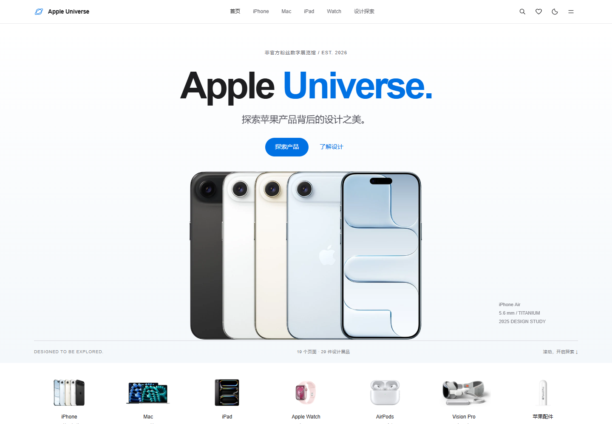

可操作 · 网页练习Apple Universe 苹果网页
浏览已经完成的苹果主题交互网页。非 Apple 官方网站，品牌与产品素材权利属于各自所有者。
桌面作品 · 实际操作演示长文成卡 AI Card
把已有文字排版成图文卡片，查看实际导出结果和操作视频。0.3.5 为本地排版工具，未接入 AI 写作；复杂多级标题排版仍有已知限制。
既有公开成果AI 影像与其他视觉作品
观看完整 AI 影像，浏览海报、插画和自拟品牌等既有作品。具体制作范围沿用原案例说明。
知流为需要本地后台的信息整理项目，目前没有完整的公开在线服务；本页不将静态页面写成已上线功能。Android 安装包、小程序源工程和未完成建模源文件不属于免安装网页体验。是否参赛及校内申报安排仍请老师确认。